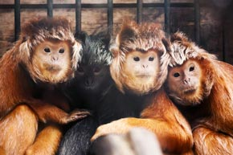
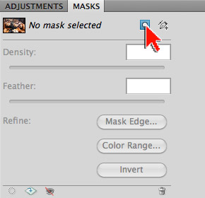
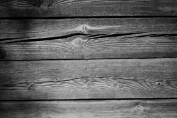
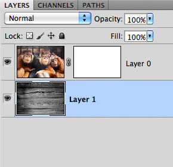
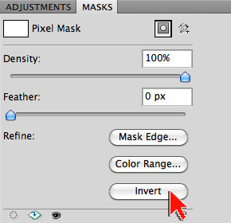
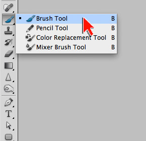
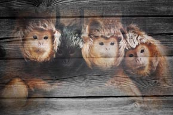

Exercise 3: Masking with the Brush Tool
When it comes to creating a highly customized mask there is no substitute for the Brush Tool. Painting with black or white at various levels of paint opacity can yield incredibly compelling results. In this exercise we will gently paint some monkeys from Java onto a piece of wood. Masking with the Brush Tool is a must have Photoshop skill.
You will know how to:
- Convert a Background layer for masking
- Mask with the Brush Tool
1. Open the image to be masked ...
- Open monkeys.jpg in Adobe Photoshop (image right)
- Source (and thanks to): Javan Lutung by Petr Kratochvil
- From the Menu Bar, go to File > Save As...
- Save your file as a .psd
- a .psd (Photoshop Document) will preserve ALL your layers and settings

2. Add a pixel mask …
- Open the MASKS panel
- Click the [Add a pixel mask] button (image right)
- Note the effect: By default, a white (inert) mask is added
- DEMO: The Background layer (double-click then hit OK to convert the Background layer to a normal, stackable layer)
- Save your file

3. Open a second image …
- Open wood.jpg in Adobe Photoshop (image right)
- Source (and thanks to): Old Board by Larisa Larisa

4. Move and re-stack ...
- With the Move Tool, drag the wood.jpg on top of the monkeys.jpg
- Note: Adding SHIFT after you begin dragging, and letting SHIFT go after you drop, aligns the wood.jpg to the center of monkeys.jpg
- Reality check: Pixel counts
- If necessary, use the Move Tool to align the two layers
- In the Layers Panel, drag the wood layer below the monkeys layer (image right)
- Save your file
- Close the wood.jpg image (do not save)
- Tap the letter 'f' so you're working on a solid grey background

5. Invert the monkeys mask...
- Select the mask thumbnail associated with the monkeys layer
- Note: There are 3 selectable thumbnails in the Layers panel
- Note: When masking it is critical to be aware of which thumbnail is selected. Many masking errors and issues result from a user being unaware of which thumbnail is highlighted in the Layers panel
- In the MASKS panel, select the Invert button (image right)
- Note the effect: Your mask is now black and the monkeys are hidden
- Toggle the Invert button a few times to see the effect
- Save your file

6. Select and set the brush tool …
- Select the Brush Tool from the Tool bar (image right)
- In the Options bar, reset the Brush Tool
- To reset a tool, right-click on the tool icon in Options bar (left end) and choose Reset Tool
- In the Options bar, set the opacity to 10%
- With the Brush tool, right-click on your image and set the following:
- Size: 300px
- Hardness: 50%
- At the bottom of the toolbar, click the Default Foreground and Background Color icon (the smaller pair of square color chips)
- Click the double arrow switcher icon so that white is the foreground color (the top square of the larger pair of square color chips)

7. Paint the mask …
- In the Layers Panel, select the mask attached to the monkeys layer
- Note: There are 3 selectable thumbnails in the Layers panel
- Note II: When masking it is critical to be aware of which thumbnail is selected. Many masking errors and issues result from a user being unaware of which thumbnail is highlighted in the Layers panel
- With the brush tool set to white, paint the monkeys in (image right)
- Change the foreground color to black to paint the monkeys out
- View your mask:
- On a Mac, Option-click directly on the layer mask thumbnail
- On a PC: Alt-click directly on the layer mask thumbnail
- Click the layer thumbnail to return to normal viewing
- Reset your mask:
- Select the mask attached to the monkey layer - then from the Menu bar, go to Edit > Fill. Choose white as the fill color
- Experiment painting with a different brush tip
- Experiment with a different brush opacity setting
- Save your file
- Tap the letter 'f' until you return to normal screen mode
